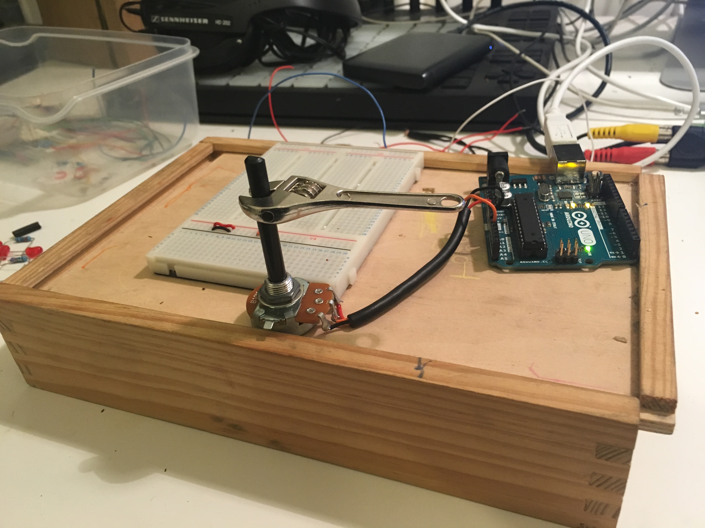

Processing/Arduino
We were required to explore creative coding using the Processing IDE. I decided that I would like to incorporate some interactivity into my project. Interactivity, in this case, is provided by a potentiometer connected to an Arduino UNO and the mouse. The mouse was used for convenience but future development of this project could include, hardware buttons or perhaps a Microsoft Kinect sensor/camera. This would look great projected on a large area with the capability of multiple users interacting together through gesture. Download a copy of the code here.
The code for this project is a customisation of a random line drawing project found on openprocessing.org with some code written by myself that polls the serial port of the computer and takes the data sent to influence the direction of the lines being drawn to the processing java applet window. The original author is credited in the comment section of the code, which can be downloaded here.
Processing
Upon launching, the code in this application draws a line with random X and Y coordinates (within the screen size) to the applet window. A random colour is chosen also. When the mouse button is clicked, a new line is drawn with the starting coordinates relating to the X and Y position of the mouse where it is clicked.
The lines have a random direction but this can be influenced by turning the potentiometer one way or the other. Both the X and the Y direction are affected by the interaction. Download a ZIP of the code.
The alpha channel of the HSL colour mode is also affected by the pot. The higher the pot value, the more alpha is introduced, giving the coloured lines a varying transparency as the traverse the screen.
Serial Communication
The arduino is programmed to send data to the serial port on the computer and in processing some code is written that polls the serial port looking for data. The code is programmed to look for a newline character.
Once it receives the newline character, it understands that this is the end of the data stream and the value is passed to the processing sketch.
In the video above, the Processing window shows the data values streaming and changing as the potentiometer is turned.
The image below shows a make shift 'handle' attached to the potentiometer. This made it easier to turn and visulaise where it is positioned in the range.
I would have liked to have spent more time experimenting with Processing and the Arduino combined and 'talking' to eachother. The plan is to revisit this assignment at a later date and develop it as an installation.
I would like to add some other hardware devices like buttons and the Kinect and experiment with implementing gestural control to the system. Grab a ZIP of the code here